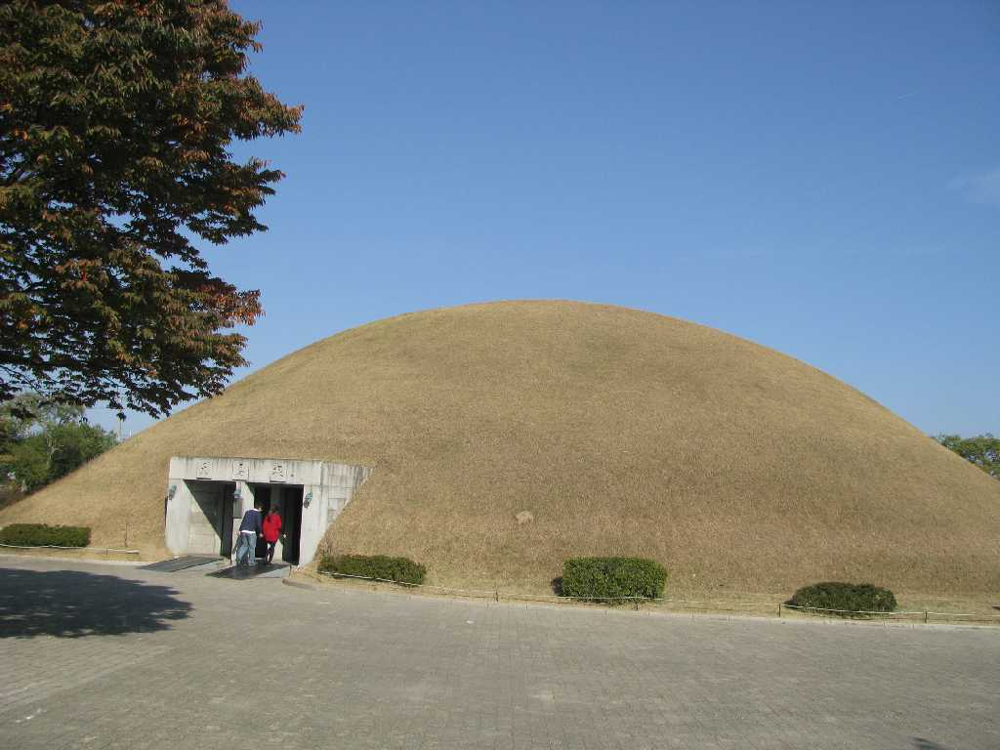
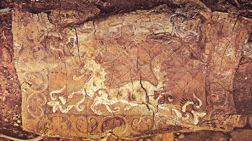
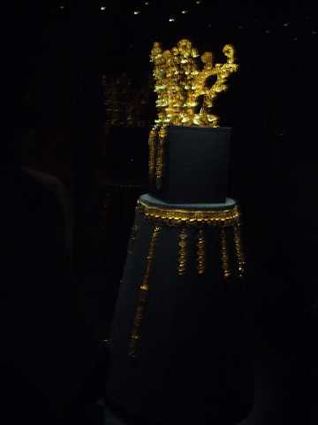
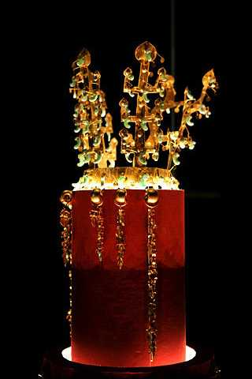

Cheonmachong 慶州 大陵苑 天馬塚
新羅王朝は紀元前５７年から紀元９３５年まで続き慶州はその都として約１０００年もの間栄えた その遺跡が慶州市内に数多く点在していることから屋根の無い博物館と言われ大陵苑には２３基の陵墓がある 天馬塚の円墳の高さは２７.7ｍ下部の直径は４７ｍ「積石木槨墳」と呼ばれる構造を持ち５～６世紀の築造と考えられている

Cheonmado 天馬図
特に天馬塚は古新羅時代における唯一の美術品として歴史的価値の高い「天馬図」のほか装身具 武器 馬具 器など１万５千点にのぼる遺物が出土している 天馬塚で出土した障泥は薄い白樺の皮を何枚も重ね斜め格子状に縫い合わせその上に白馬が飛んでいる姿を描いたもので天馬塚の名称の由来となった絵である

Gold Crown and Belt 金冠 銙帯 国立慶州博物館
 Gyeongju
National Museum
Gyeongju
National Museum
天馬塚から出土した 新羅の冠飾りを代表する金冠は出字形立飾りと鹿角形立飾りが付いている 出字形は樹枝を鹿角形は鹿の角を図案化したものでこうした形の冠はシベリアシャーマンの冠に似ている 遺物の中には日本の古墳から出土した副葬品とほとんど同じ形態のものが数多く存在するのも古墳の造営者達がこの地方から日本へ渡っていった可能性を示唆している

金冠 国立中央博物館(ソウル)  National Museum of Korea
National Museum of Korea
５世紀頃作成された韓国の国宝の金冠で７７の翡翠は当時韓国で発見されておらず日本から輸入されたものと考えられている